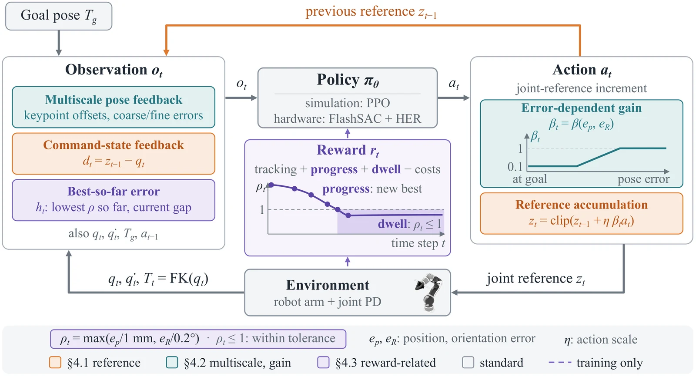

PolicyIK: High-Precision Inverse Kinematics for Robot Arms with Reinforcement Learning
1New York University2New York University Abu Dhabi*Equal contribution
PolicyIK reaches and holds poses within 1 mm and 0.2°, trained directly on a physical arm.
Abstract
Inverse kinematics (IK) converts end-effector pose commands into joint motion, and many vision-language-action (VLA) policies rely on it to act on a given arm and to transfer across embodiments. Precise IK remains laborious: redundancy and singularities complicate the inverse mapping, execution depends on hand-tuned controllers, and training data on physical robots are costly to collect. We present PolicyIK, a goal-conditioned reinforcement learning policy for high-precision IK. It updates joint-position references from pose feedback and observes its accumulated reference relative to the measured joints, so it can retain the offset that the position controller needs at rest. Two-scale pose errors with an error-dependent action gain resolve millimeter residuals while preserving large motions. Progress and dwell rewards teach it to both reach the tolerance and stay within it. In simulation, a single attempt by the trained PPO policy keeps the mean errors over the final second within 1 mm and 0.2° on 93.5% of held-out tasks, and a deployment protocol raises success to 98.9%. When trained directly on a physical arm with an off-policy RL learner, PolicyIK achieves higher reaching and holding success than all four classic IK controllers under the same time budgets. In simulated pick-and-place, PolicyIK executes the end-effector commands of the π0.5 VLA policy with 95.7% success. These results show that reinforcement learning can provide high-precision inverse kinematics for robot arms.
On a real arm, PolicyIK reaches 54 of 60 tasks and holds 43.
Reached 54 / 60Held 43 / 60Median error, final second 0.50 mm, 0.12°
1 mm, 0.2° reached held, final 5 s
Each task gets 25 s. Reached means within 1 mm and 0.2° for 0.5 s, held for the whole final 5 s.
After training
Four goals in a row, 32 to 39 cm apart, each reached within 1 mm and 0.2°.
During training
The policy at five points of real-arm training. Each episode runs with the training exploration noise.
Classic IK drifts off target.
Reached
Held
Same 60 tasks, same 25 s budget.
Both reach the goal. Only PolicyIK stays there.
Classic IK reaches late, then leaves the goal twice.
Classic IK freezes far from the goal.
Classic IK freezes far from the goal.
Classic IK freezes far from the goal.
Near a singularity, classic IK stays far from the goal.
Reaching and holding need different RL designs.

It learns the offset that holds the arm on the goal.
It sees its joint reference relative to the measured joints, so it can keep that offset.
Single-attempt success: PolicyIK 93.5% vs 30.8% when each action starts from the measured joints
It resolves millimeter errors without shrinking large motions.
It sees coarse and fine pose errors, and its action gain shrinks as the error gets small.
Median position error: PolicyIK 0.25 mm vs 0.36 mm without fine pose channels
Median entry time: PolicyIK 1.73 s vs 2.28 s with a fixed gain
Progress gets it there. Dwell keeps it there.
Progress rewards every step closer. Dwell rewards every step within 1 mm and 0.2°.
Entered tasks not held through the final second: PolicyIK 2.4% vs 7.8% without dwell
Trained directly on a real arm with FlashSAC.
Every transition on hardware costs robot time, so PolicyIK concentrates its data where precision is decided.
- Reverse curriculum. Episodes start close to their goals, and the start distance grows as training proceeds. The policy learns the final correction and holding first.
- Near-goal sampling. Steps near the goal decide success but are rare early in training, so most of each batch is drawn from them.
- Latent-alignment critic. Large rotations often need a detour on which the pose error first grows. The critic embeds the state and the goal separately and predicts the value from their difference, which better captures how many steps remain to reach the goal.
The PolicyIK recipe also works on a physical xArm7.
Trained in simulation or on the arm, both policies succeed on all 60 standard and 60 large-rotation tasks.
In simulation, 98.9% of held-out tasks end within 1 mm and 0.2°.
One forward pass takes 0.035 ms on one CPU core, three orders of magnitude below the control period
The grey gripper marks each goal.
PolicyIK executes π0.5's commands with 95.7% success.
Simulated pick-and-place on ten LIBERO-Object tasks. PolicyIK is trained only to reach.
BibTeX
@article{liu2026policyik,
title = {PolicyIK: High-Precision Inverse Kinematics for Robot Arms with Reinforcement Learning},
author = {Liu, Yuhan and Liu, Xinqi and Dong, Zixuan and Ross, Keith W. and Wan, Shenji},
journal = {arXiv preprint arXiv:2611.05372},
year = {2026}
}